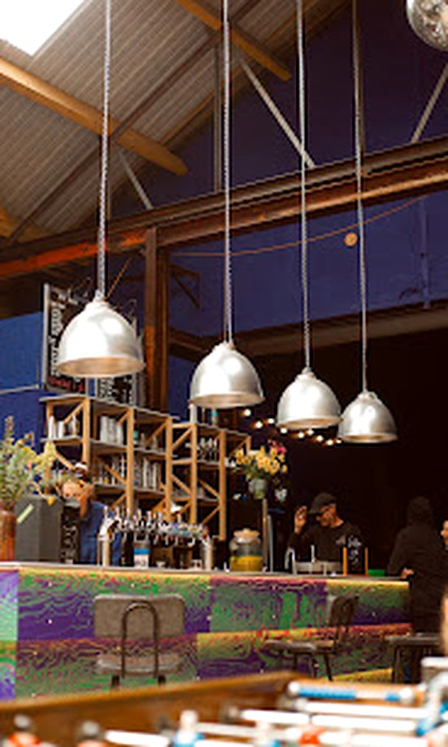
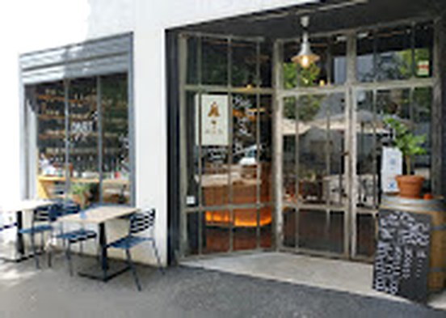
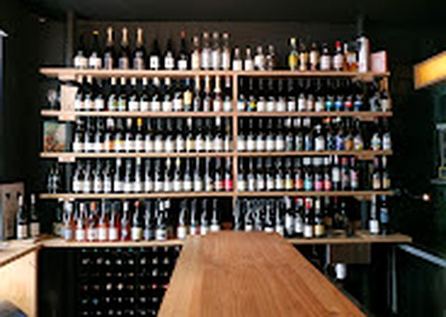
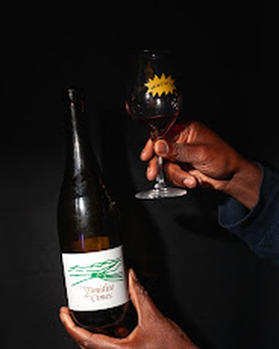

Île de Nantes — depuis la Prairie au Duc
BRAS DE FER✶
Cave festive✶Bar à vins✶Restaurant
Du vin naturel, des brochettes au feu, une boule à facettes. Une cave où l'on trinque tôt et où l'on danse tard, du mardi au samedi.


Une ancienne galerie d'art devenue cave à danser.
Sur l'île de Nantes, à deux pas des Machines, le Bras de Fer occupe un ancien garage passé par la case galerie. Il en reste l'esprit : des briques, du bois, des expos d'artistes locaux — et une grande façade noire taguée qui annonce la couleur.
Dedans : un comptoir pour l'apéro, une mezzanine à canapés pour souffler, une piste de danse sous la boule à facettes pour le reste. Bar à vins le jour, cave festive la nuit.
« Du bon vin, de la bonne bouffe, des copains. »
- 01Le comptoir & la terrasse cachée
- 02La mezzanine à canapés — privatisable
- 03La piste de danse, sous la boule à facettes
- 04La cave à emporter, prix caviste


vins naturels
Derrière le comptoir, les frères Benjamin & Nicolas Ferchaud. Leur chai urbain est à moins d'un kilomètre — les cuvées maison, comme Les Enfants Sauvages ou le pét-nat de pineau-d'aunis, font le trajet à pied.
Autour : une sélection de vigneron·nes vivants et sincères, à boire sur place au verre ou à emporter, prix cave.
- Patrick BoujuAuvergne
- Sébastien ChatillonRhône
- Fond CyprèsCorbières
- Les cuvées maisonchai urbain, Nantes
Cave à emporter du mardi au samedi, 16h — 22h.


On grille, ON SAUCE !
Le soir, la braise prend le relais : brochettes grillées, sauces généreuses, entrées à partager. Simple, direct, fait pour accompagner les quilles. Service du mardi au samedi, 19h — 22h.
Carte courte et de saison — elle bouge. La carte du moment est sur Instagram.
ET PUIS, ÇA DANSE.
Quand la cuisine ferme, la boule à facettes prend le service. DJ sets de la scène locale et d'ailleurs, expos, ventes de disques, soirées maison — jusqu'à 2h du matin.
- ✶DJ setshouse, disco, funk — du mercredi au samedi selon l'humeur
- ✶Expositionsartistes locaux aux murs, vernissages arrosés
- ✶Ventes de disquescrates de vinyles entre deux verres
- ✶Privatisationla mezzanine pour vos anniversaires & pots de départ
Toute la programmation est annoncée sur @brasdefernantes ↗
Horaires
- Barmar — sam · 16h — 2h
- Cave à emportermar — sam · 16h — 22h
- Restaurationmar — sam · 19h — 22h
- Dimanche & lundifermé
Nous trouver
20 boulevard de la Prairie au Duc
44200 Nantes — île de Nantes
Tram — arrêt République